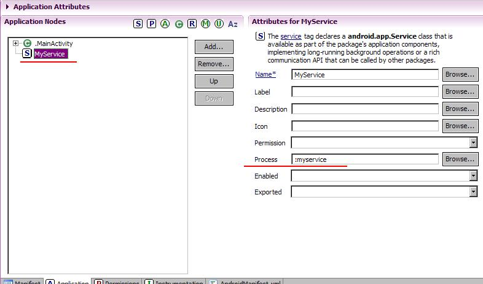
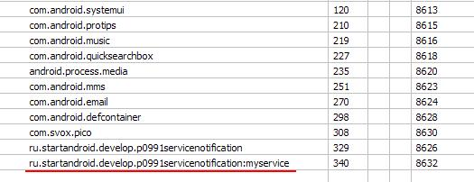
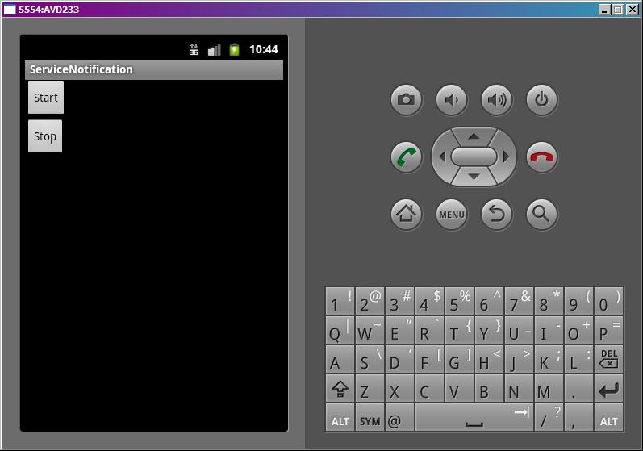
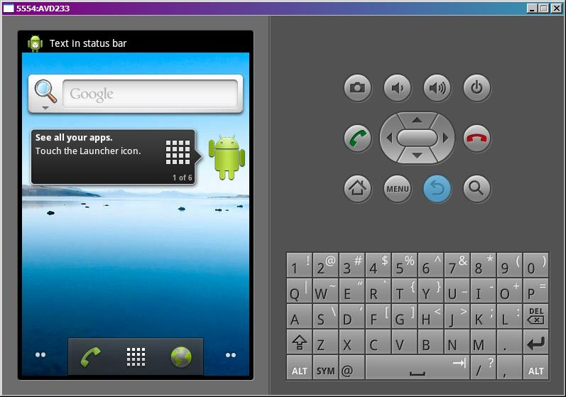
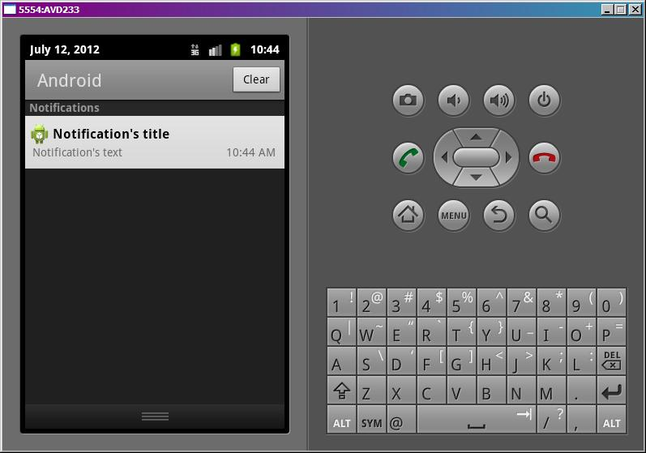
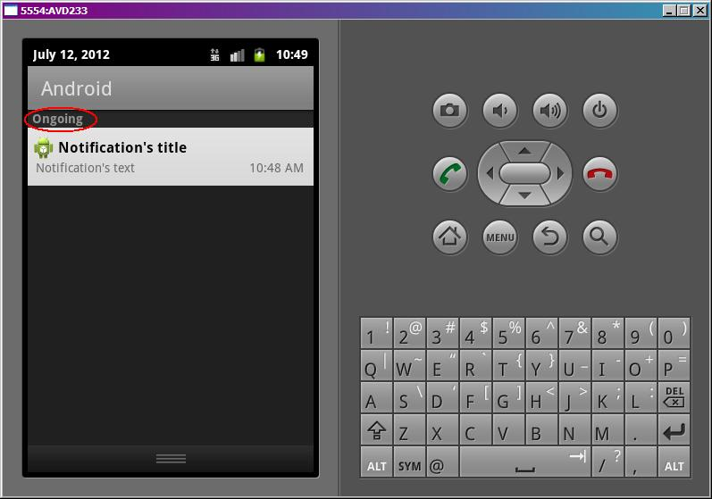

В этом уроке:
- шлем уведомление из сервиса
В принципе, уведомления – отдельная от сервисов тема. Но чаще всего уведомления используются именно в сервисах, поэтому я решил дать эту тему сейчас.
В андроид (версии < 3) есть строка вверху экрана. Называется она статус-бар. Туда обычно в виде иконок сваливаются различные уведомления для пользователя (новые письма, смс и прочие). Пользователь открывает статус бар – видит там чуть более подробную инфу о событии. Дальше он может либо стереть это уведомление, либо нажать на него и перейти непосредственно к событию.
В этом уроке научимся все это проделывать. Для начала разберем уведомление на логические составляющие, чтобы проще было понять как его создавать и отправлять.
Первая часть – то, что видно в статус-баре, когда уведомление только приходит – иконка и текст. Текст потом исчезает и остается только иконка.
Вторая часть – то, что мы видим, когда открываем статус бар (тянем вниз). Там уже полноценный View с иконкой и двумя текстами, т.е. более подробная информация о событии.
Третья часть – то, что произойдет, если мы нажмем на View из второй части. Тут обычно идет вызов Activity, где мы можем просмотреть полную информацию и обработать событие.
Кроме этого есть еще несколько возможностей, по которым совсем кратко пробежимся в конце урока.
Создадим приложение и сервис. Сервис, как будто загружает файл и посылает уведомление, по нажатию на которое будет открываться приложение и отображать имя файла.
Создадим проект:
Project name: P0991_ServiceNotification
Build Target: Android 4.0
Application name: ServiceNotification
Package name: ru.startandroid.develop.p0991servicenotification
Create Activity: MainActivity
Добавим в strings.xml строки:
<string name="start">Start</string>
<string name="stop">Stop</string>main.xml:
<?xml version="1.0" encoding="utf-8"?>
<LinearLayout
xmlns:android="http://schemas.android.com/apk/res/android"
android:layout_width="fill_parent"
android:layout_height="fill_parent"
android:orientation="vertical">
<Button
android:id="@+id/btnStart"
android:layout_width="wrap_content"
android:layout_height="wrap_content"
android:onClick="onClickStart"
android:text="@string/start">
</Button>
<Button
android:id="@+id/btnStop"
android:layout_width="wrap_content"
android:layout_height="wrap_content"
android:onClick="onClickStop"
android:text="@string/stop">
</Button>
<TextView
android:id="@+id/tv"
android:layout_width="fill_parent"
android:layout_height="wrap_content"
android:text="">
</TextView>
</LinearLayout>Кнопки для старт/стопа сервиса и TextView для отображения результата
Создаем сервис MyService.java и прописываем его в манифесте. В манифесте же настроим сервис так, чтобы он работал в отдельном процессе. Для этого надо в его атрибуте process написать двоеточие и какое-нить слово.

Система эту строку добавит к package сервиса и, тем самым, получит название нового процесса, в котором и запустит сервис

MainActivity.java:
package ru.startandroid.develop.p0991servicenotification;
import android.app.Activity;
import android.content.Intent;
import android.os.Bundle;
import android.text.TextUtils;
import android.view.View;
import android.widget.TextView;
public class MainActivity extends Activity {
public final static String FILE_NAME = "filename";
/** Called when the activity is first created. */
@Override
public void onCreate(Bundle savedInstanceState) {
super.onCreate(savedInstanceState);
setContentView(R.layout.main);
TextView tv = (TextView) findViewById(R.id.tv);
Intent intent = getIntent();
String fileName = intent.getStringExtra(FILE_NAME);
if (!TextUtils.isEmpty(fileName))
tv.setText(fileName);
}
public void onClickStart(View v) {
startService(new Intent(this, MyService.class));
}
public void onClickStop(View v) {
stopService(new Intent(this, MyService.class));
}
}В onCreate мы вытаскиваем из intent и кладем в TextView текст. Этот текст мы будем отправлять из сервиса через уведомление.
onClickStart и onClickStop – это обработчики кнопок. Стартуют и останавливают сервис.
MyService.java:
package ru.startandroid.develop.p0991servicenotification;
import java.util.concurrent.TimeUnit;
import android.app.Notification;
import android.app.NotificationManager;
import android.app.PendingIntent;
import android.app.Service;
import android.content.Intent;
import android.os.IBinder;
public class MyService extends Service {
NotificationManager nm;
@Override
public void onCreate() {
super.onCreate();
nm = (NotificationManager) getSystemService(NOTIFICATION_SERVICE);
}
public int onStartCommand(Intent intent, int flags, int startId) {
try {
TimeUnit.SECONDS.sleep(5);
} catch (InterruptedException e) {
e.printStackTrace();
}
sendNotif();
return super.onStartCommand(intent, flags, startId);
}
void sendNotif() {
// 1-я часть
Notification notif = new Notification(R.drawable.ic_launcher, "Text in status bar",
System.currentTimeMillis());
// 3-я часть
Intent intent = new Intent(this, MainActivity.class);
intent.putExtra(MainActivity.FILE_NAME, "somefile");
PendingIntent pIntent = PendingIntent.getActivity(this, 0, intent, 0);
// 2-я часть
notif.setLatestEventInfo(this, "Notification's title", "Notification's text", pIntent);
// ставим флаг, чтобы уведомление пропало после нажатия
notif.flags |= Notification.FLAG_AUTO_CANCEL;
// отправляем
nm.notify(1, notif);
}
public IBinder onBind(Intent arg0) {
return null;
}
}В onCreate получаем менеджер уведомлений – NotificationManager. Он нам понадобится, чтобы отправить уведомление.
В onStartCommand запускаем паузу на 5 секунд (эмулируем закачку файла) и после этого отправляем уведомление. Именно из-за этой паузы мы и используем другой процесс, чтобы не тормозило основное приложение.
В sendNotif мы создаем и отправляем уведомление. Правда, немного в иной последовательности, что я описывал выше. Сначала первая часть, потом третья, потом вторая.
Первая часть – создаем Notification. В конструкторе указываем иконку и текст, которые будут видны в статус-баре. Также мы здесь указываем время. Обычно это текущее время. Но можно указать и прошлое и будущее. По этому времени уведомления будут отсортированы в статус-баре и в его раскрытой части.
Третья часть – создаем Intent, который мы бы использовали для вызова нашего Activity. Туда помещаем имя загруженного файла. Activity его достанет и поместит в TextView. Далее мы оборачиваем этот Intent в PendingIntent, с помощью метода getActivity. На вход ему передаем контекст и Intent. Второй параметр не используется (так написано в документацие). А четвертый – это флаги, влияющие на поведение PendingIntent. Они не относятся к теме урока, мы их не используем.
Теперь этот созданный PendingIntent содержит информацию о том, что надо вызывать Activity, а также объект Intent, который для этой цели надо использовать. Это будет использовано при нажатии на уведомлении.
Вторая часть – вызываем метод setLatestEventInfo. Передаем на вход контекст, текст-заголовок, подробный текст и PendingIntent. Теперь, когда мы откроем статус-бар, мы увидим два этих текста (заголовок и подробный). А, когда нажмем на уведомление, система использует PendingIntent для запуска Activity.
Далее мы для созданного уведомления ставим флаг FLAG_AUTO_CANCEL, чтобы оно исчезло из статус-бара после нажатия. По умолчанию оно не исчезает и продолжает висеть.
Далее вызываем метод notify для менеджера уведомлений и передаем туда ID и созданное уведомление. ID используется, если мы хотим изменить или удалить уведомление.
Все сохраним, запустим.

Жмем Start и сразу закрываем приложение кнопкой Назад.
Проходит 5 сек и появляется уведомление (первая часть)

Открываем статус-бар и видим более подробную инфу (вторая часть)

Жмем на уведомление.
Открывается наше приложение (третья часть) и в TextView появляется текст, переданный из сервиса.
Теперь вкратце пробежимся по остальным интересным возможностям уведомлений.
Обновление старого или новое уведомление
Если вы создадите новое уведомление и отправите его (notify) с тем же ID, что и у уже существующего уведомления, то новое заменит старое. Таким образом, вы можете уведомления обновлять.
Если же надо показать новое уведомление, то используйте другой ID.
Удаление
Чтобы убрать уведомление из статус-бара, используется метод cancel у менеджера уведомлений. На вход подается ID. Либо используйте метод cancelAll, чтобы удалить все уведомления.
Звук
Если хотите, чтобы уведомление появилось со стандартным звуком, добавьте флаг Notification.DEFAULT_SOUND в поле уведомления defaults.
А для использования своих звуков используется поле sound.
Чтобы проиграть файл с SD:
notif.sound = Uri.parse("file:///sdcard/notification/ringer.mp3");
Чтобы использовать какую-либо из стандартных мелодий, используем Content Provider:
notif.sound = Uri.withAppendedPath(Audio.Media.INTERNAL_CONTENT_URI, "6");
Подробнее здесь.
Вибра
Если хотите, чтобы уведомление появилось со стандартной виброй, добавьте флаг Notification.DEFAULT_VIBRATE в поле уведомления defaults.
А для использования своей комбинации вибры используется поле vibrate. В это поле помещается массив long-чисел. Первое – длительность паузы (в миллисекундах) перед началом вибрирования, второе – длительность вибрирования, третье – длительность паузы, четвертое – длительность вибрирования … и т.д. Т.е. создаете свою комбинацию пауз и вибрирования. И мобила при получении уведомления вам ее провибрирует.
Подробнее здесь.
Для работы вибры необходимо прописать права VIBRATE в манифесте.
Индикатор
Если хотите, чтобы уведомление появилось с миганием индикатора, добавьте флаг Notification.DEFAULT_LIGHTS в поле уведомления defaults.
А для использования своей комбинации мигания индикатора используются поля
ledARGB – здесь задается цвет
ledOnMS – время «горения»
ledOffMS – время «не горения»
И в поле flags надо добавить флаг Notification.FLAG_SHOW_LIGHTS.
В итоге индикатор будет мигать с заданными значениями и с заданным цветом. В документацие написано, что не все девайсы поддерживают разные цвета. Поэтому выбранный вами цвет не гарантируется.
Подробнее здесь.
Число
У Notification есть поле number. Вы можете поместить туда число больше нуля и оно отобразится на уведомлении.
Например, при notif.number = 3 уведомление будет выглядеть так:
Флаги
Добавляются в поле flags
FLAG_INSISTENT – звук уведомления будет повторяться, пока не откроют статус-бар
FLAG_ONGOING_EVENT – уведомление появляется не в обычной секции, а в ongoing (постоянные). Уведомления из этой секции не удаляются при нажатии кнопки очистки уведомлений.

FLAG_NO_CLEAR – уведомление не удалится при очистке всех уведомлений
Не очень понимаю, в чем разница между ongoing и тем, что уведомление не удалится после нажатия на кнопку очистки всех уведомлений. Но флаги такие есть, и я о них упомянул.